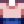

Quality Fertilizer
| Quality Fertilizer | |
| Improves soil quality, increasing your chance to grow quality crops. Mix into tilled soil. | |
| Information | |
| Source | Pierre's from Year 2 • Crafting • Bone Mill • Mystery Box • Golden Mystery Box |
| Sell Price | |
| Recipe | |
| Recipe Source(s) | |
| Ingredients | |
| Produces | 2 Quality Fertilizer per craft |
Quality Fertilizer is a Fertilizer that improves the chance to grow a quality crop. It can be crafted, obtained from a Bone Mill, or purchased for  150g from Pierre's General Store beginning in Year 2. It may also occasionally be sold by the Traveling Cart (in any year) for
150g from Pierre's General Store beginning in Year 2. It may also occasionally be sold by the Traveling Cart (in any year) for  100–1,000g. Thirty Quality Fertilizer are the reward for completing the
100–1,000g. Thirty Quality Fertilizer are the reward for completing the  5,000 Bundle in the Vault. 10-20 Quality Fertilizer may be received from opening a Mystery Box or Golden Mystery Box.
5,000 Bundle in the Vault. 10-20 Quality Fertilizer may be received from opening a Mystery Box or Golden Mystery Box.
Quality Fertilizer must be placed on tilled soil before a seed has sprouted.
Quality Fertilizer only affects the basic harvest, which means that extra crops gained at harvest (i.e., Coffee Bean, Blueberry, Cranberries) will be of regular quality.
Chance for Quality Crops
| Farming level | % Regular quality | % Silver quality | % Gold quality | Average price |
|---|---|---|---|---|
| 0 | 78% | 14% | 8% | 1.07 |
| 1 | 64% | 23% | 13% | 1.12 |
| 2 | 52% | 30% | 18% | 1.17 |
| 3 | 40% | 36% | 24% | 1.21 |
| 4 | 30% | 41% | 29% | 1.25 |
| 5 | 21% | 45% | 34% | 1.28 |
| 6 | 15% | 45% | 40% | 1.31 |
| 7 | 14% | 41% | 45% | 1.33 |
| 8 | 13% | 37% | 50% | 1.34 |
| 9 | 11% | 33% | 56% | 1.36 |
| 10 | 10% | 29% | 61% | 1.38 |
| 11 | 9% | 25% | 66% | 1.39 |
| 12 | 7% | 21% | 72% | 1.41 |
| 13 | 6% | 17% | 77% | 1.43 |
| 14 | 4% | 13% | 82% | 1.44 |
When to turn fish into Quality Fertilizer
Below are quick-reference tables showing when to turn fish into Quality Fertilizer, based on the quality of the fish.
(The tables consider fish whose sell price is exactly  300g to be not good to turn into Quality Fertilizer, since the addition of the sell price of 4 sap (
300g to be not good to turn into Quality Fertilizer, since the addition of the sell price of 4 sap ( 8g) makes it technically better to purchase Quality Fertilizer.)
8g) makes it technically better to purchase Quality Fertilizer.)
Fishing Pole Fish
| Fish | No Profession | ||
|---|---|---|---|
| Always | Always | Always | |
| Always | Always | Always | |
| Always | Regular, Silver, Gold | Regular, Silver, Gold | |
| Always | Always | Always | |
| Always | Always | Always | |
| Always | Always | Always | |
| Regular, Silver | Regular | Never | |
| Always | Always | Always | |
| Always | Always | Regular, Silver, Gold | |
| Always | Always | Always | |
| Always | Always | Regular, Silver, Gold | |
| Always | Always | Always | |
| Regular, Silver, Gold | Regular, Silver, Gold | Regular, Silver | |
| Always | Always | Always | |
| Always | Always | Always | |
| Always | Always | Regular, Silver, Gold | |
| Always | Regular, Silver, Gold | Regular, Silver, Gold | |
| Always | Always | Regular, Silver, Gold | |
| Regular, Silver, Gold | Regular, Silver, Gold | Regular, Silver | |
| Always | Always | Regular, Silver, Gold | |
| Regular, Silver, Gold | Regular, Silver, Gold | Regular, Silver | |
| Always | Always | Always | |
| Always | Always | Regular, Silver, Gold | |
| Regular, Silver | Regular | Never | |
| Always | Always | Always | |
| Always | Always | Always | |
| Always | Always | Always | |
| Always | Always | Always | |
| Always | Always | Always | |
| Always | Always | Always | |
| Regular, Silver, Gold | Regular, Silver, Gold | Regular, Silver | |
| Always | Always | Always | |
| Always | Always | Always | |
| Always | Always | Regular, Silver, Gold | |
| Always | Always | Always | |
| Always | Always | Always | |
| Regular, Silver | Regular | Never | |
| Regular, Silver, Gold | Regular, Silver | Regular | |
| Regular, Silver | Regular | Never | |
| Always | Always | Always | |
| Regular | Never | Never | |
| Regular, Silver, Gold | Regular, Silver, Gold | Regular, Silver | |
| Always | Always | Always | |
| Always | Always | Regular, Silver, Gold | |
| Regular, Silver, Gold | Regular, Silver, Gold | Regular, Silver | |
| Always | Always | Regular, Silver, Gold | |
| Always | Always | Always |
Crab Pot Fish
| Fish | No Profession | ||
|---|---|---|---|
| Always | Always | Always | |
| Always | Always | Always | |
| Always | Always | Always | |
| Always | Always | Always | |
| Always | Always | Always | |
| Always | Always | Always | |
| Always | Always | Always | |
| Always | Always | Always | |
| Always | Always | Always | |
| Always | Always | Always |
Gifting
| Villager Reactions
| |
|---|---|
| Dislike | |
Tailoring
Quality Fertilizer can be used in the spool of the Sewing Machine to create the dyeable High-Waisted Shirt. 
Quests
Quality Fertilizer is not used in any quests.
History
- 1.05: Corrected sell price from
 20g to 150g.
20g to 150g. - 1.4: Quality Fertilizer can be applied to seeds (but can't be applied once a seed has sprouted). Can now be used in Tailoring.
- 1.6: Quality Fertilizer now requires 4 sap instead of 2, but produces 2 per craft (still only requires 1 fish). Fixed quality fertilizer showing a green tile on sprouted crops, even though it can’t be placed there. Added as possible prize from Mystery Boxes and Golden Mystery Boxes.